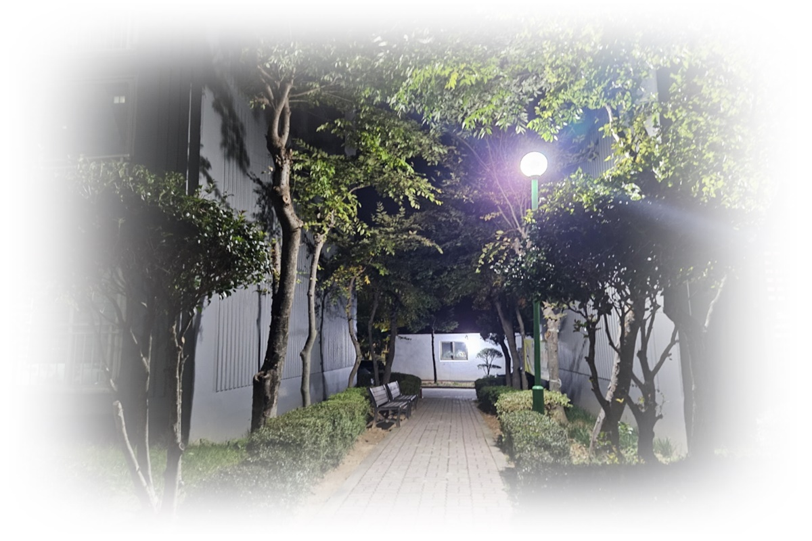

1.노년기 수면과 생애 통합의 심리
노년기의 잠은 ‘줄어든다’거나 ‘깨진다’는 표현으로 자주 설명된다. 실제로 노년기에 접어들면 깊은 잠은 감소하고, 밤중 각성과 새벽 각성이 잦아지며, 낮잠의 비중이 늘어난다.
이러한 변화는 많은 노인에게 불안의 원인이 되지만, 발달심리학적 관점에서 노년기의 수면은 기능의 상실이 아니라 리듬의 전환으로 이해될 필요가 있다. 이 시기의 잠은 더 이상 회복만을 위한 시간이 아니라, 기억과 정서를 정리하고 삶 전체를 통합하는 심리적 공간으로 기능한다.
이 글은 브런치북(https://brunch.co.kr/@205593d149c84b6/3) 『감정도 잠이 필요하다』 2부 6장 〈노년기: 기억과 고요가 머무는 밤〉에 포함된 내용으로, 노년기의 수면을 기능 저하가 아닌 생애 통합의 과정으로 조명한다. 분절된 잠과 깨어 있는 시간이 어떤 심리적 의미를 지니는지를 발달심리학적 관점에서 탐구한다.

2. 노년기의 발달 과제와 수면의 의미
Erik Erikson은 노년기를 자아통합 대 절망의 단계로 설명하며, 이 시기를 삶 전체를 돌아보고 의미를 재구성하는 시기로 보았다. 노년기의 잠은 이러한 발달 과제가 가장 잘 드러나는 장면이다. 밤에 자주 깨어 과거의 기억을 떠올리거나, 지나온 선택을 되짚는 경험은 병리적 반추라기보다 생애 회고의 자연스러운 일부이다. 이 시기의 잠은 미래를 준비하는 시간이 아니라, 지나온 삶을 정리하고 수용하는 시간으로 전환된다.
3. 신체적 변화와 수면 구조의 특성
노년기에는 수면 구조 자체가 변화한다. 깊은 수면 단계가 현저히 줄어들고, 얕은 수면과 각성이 반복되는 양상이 일반적이다. 또한 생체시계가 앞당겨져 이른 시간에 졸림이 오고 새벽에 일찍 깨어나는 경향이 나타난다. 이러한 변화는 질병의 징후라기보다 노화 과정에서 나타나는 생리적 조정에 가깝다. 문제는 이러한 변화를 ‘예전처럼 자지 못한다’는 기준으로 평가할 때 발생한다. 이전의 수면을 기준으로 삼을수록 불안은 커지고, 오히려 각성 수준은 높아질 수 있다.
4. 기억, 상실, 밤의 정서
노년기의 밤에는 현재의 신체 불편뿐 아니라, 관계의 상실과 역할 변화가 함께 머문다. 배우자의 부재, 사회적 역할 축소, 신체 기능 저하는 정서적 고요와 동시에 공허를 불러올 수 있다. 잠에서 깨어 있는 시간에 과거의 기억이 선명해지는 현상은, 노년기의 정서가 현재보다 과거에 더 많은 자리를 두고 있음을 보여준다. 이때의 깨어 있음은 반드시 고통을 의미하지 않으며, 오히려 삶을 통합하는 심리적 작업으로 기능할 수 있다.
5. 교육·상담 장면에서의 수용 중심 접근
노년기의 수면을 다룰 때 가장 중요한 원칙은 정상화와 수용이다. “왜 이렇게 잠을 못 주무세요?”라는 질문보다, “지금의 잠이 어떤 의미로 느껴지시나요?”라는 접근이 더 적절하다. 상담과 교육에서는 수면의 양을 늘리는 데 초점을 두기보다, 밤 시간의 불안을 낮추고 고요를 유지하도록 돕는 것이 중요하다. 노년기의 잠은 교정의 대상이 아니라, 변화된 리듬에 맞추어 존중되어야 할 삶의 일부이다.
결론
노년기의 잠은 줄어드는 밤이 아니라, 달라지는 밤이다. 이 시기의 수면은 더 이상 생산성과 회복을 위해 존재하지 않으며, 기억과 정서를 정리하고 삶을 통합하는 방향으로 기능한다. 잠이 분절되고 깨어 있는 시간이 늘어나는 것은 실패의 신호가 아니라, 생애 주기의 마지막 단계에서 나타나는 자연스러운 전환이다. 노년기의 잠을 이해한다는 것은, 인간의 삶을 끝까지 발달의 연속선 위에서 바라보는 관점과 맞닿아 있다. 고요한 밤 속에서 삶을 정리할 수 있을 때, 노년기의 잠은 비로소 안정된 쉼이 된다.
“노년기의 잠은 삶의 기억과 정서를 통합하는 고요한 시간이다.”
참고문헌
Erik Erikson(1982). The Life Cycle Completed. New York: Norton.
Baltes, P. B., & Baltes, M. M. (1990). Successful Aging. Cambridge: Cambridge University Press.
정옥분 (2021). 『노년기 발달과 심리』. 서울: 학지사.
김미숙 (2020). 『노년기의 적응과 심리적 안녕』. 서울: 공동체.
이은경·박지선 (2022). 『노년기 수면과 정서』. 서울: 학지사.
2026.01.07 - [감정도 잠이 필요하다] - 중년기 잠의 발달심리(5): 잠들 수 없을 때, 삶은 무엇을 요구하는가
2025.12.18 - [감정도 잠이 필요하다] - 수면 불안의 정서적 기제와 내면 반응의 이해(4)
수면 불안의 정서적 기제와 내면 반응의 이해(4)
수면은 신체 회복뿐 아니라 정서 조절과 인지적 통합을 담당하는 핵심 과정이다. 많은 성인은 밤이 되면 낮 동안 미처 처리하지 못한 감정과 생각이 고요한 환경 속에서 선명해지며 쉽게 잠들지
think-sis.co.kr